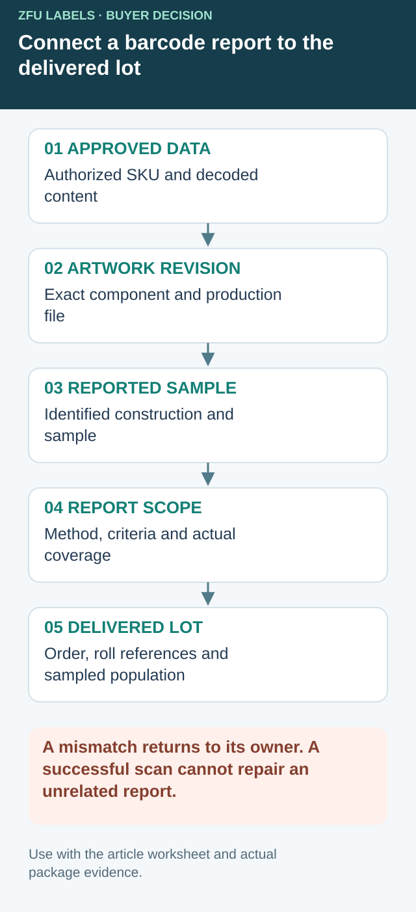

Reconcile the verification report with the delivered label lot
A verification PDF can be genuine and still represent a sample other than the labels being received. Before relying on it, connect the reported symbol to the approved identifier, artwork revision, finished construction and actual delivery. This is an evidence handoff, not a request for the printer to guarantee every possible scanner or verify every label without an agreed sampling plan.


GS1 Switzerland's checking-service description explicitly describes its report as a snapshot of the submitted code. That limitation matters at receiving: a report does not acquire broader coverage merely because it is attached to a large order. The following register is an editorial purchasing tool; it does not replace the applicable verification method or the receiving partner's acceptance specification.
| Link to reconcile | Record or compare | Open a discrepancy when |
|---|---|---|
| Approved data | SKU and authorized decoded content | The reported identifier is different or unapproved |
| Artwork authority | File/component and revision | The report references a superseded or unclear sample |
| Printed sample | Sample identity, construction and relevant production reference | The tested object cannot be identified |
| Report scope | Symbol type, method/settings and agreed criteria | A result is interpreted outside its stated scope |
| Delivery | Order, roll/lot references and sampling coverage | The submitted sample cannot be linked to this receipt |
| Later operations | Application, finishing or handling after the reported sample | A relevant change is absent from the review |
Have the supplier explain how its sampled labels are identified and related to production. Agree appropriate coverage and the record delivered with the order before approving the service charge. A purchasing coordinator should not invent a sample frequency or a grade from an unrelated retail job.
For a hypothetical pesto order, the brand approves revised code data while an earlier proof's report remains in the folder. At receiving, a successful phone scan might reveal the current number, but it cannot transform the old report into evidence for the new printing. Keep the data check, flag the revision mismatch and obtain a decision from the responsible verification or receiving party.
Likewise, a report on one member of a mixed-SKU order should identify its actual coverage. Do not assume that a common face stock makes every code, size and artwork version equivalent. Ask which changes require another check and which remain covered under the agreed plan. Hold the unresolved acceptance decision with a named owner rather than deleting the inconvenient attachment or automatically rejecting unrelated stock.
Retain the reconciled report, sample reference and delivery record together. On a reorder, check whether the identity and construction remain represented. The code-layout guide owns symbol purpose and placement; the multipack guide owns the selling-unit decision. This register addresses the remaining evidence chain between a particular report and a particular receipt.
The phone says yes. The purchase order is still incomplete.
I understand why a founder sends a phone screenshot as approval. It is immediate, familiar and free. For checking whether the code opens the intended page or contains the expected number, it is useful. I would keep that check. I would not call it a verification report.
GS1's barcode verification guidelines describe a consistent process for evaluating barcode quality and encoded data integrity. The practical distinction is that verification provides diagnostic information under defined conditions, rather than a single reader's yes-or-no response.
A retailer launch changes the decision
Here is a composite planning scenario. A pesto producer sells directly at weekend markets and checks its jar code with a phone. The same product then receives its first wholesale order. The buyer asks for barcode evidence, and the founder forwards the screenshot. Nobody was trying to skip quality control; the parties were using the word 'tested' differently.
My recommendation would be to get the retailer's acceptance requirement before approving the print order. Do not guess the required grade, symbol size or measurement setup from another brand's packaging.
A second buyer runs an internal stockroom with a fixed scanner fleet and no retail distribution. Its operating test has real value because it reproduces the actual workflow. That does not make a phone test equivalent to formal verification; it means the buying requirement is different. Extra testing should solve a defined risk rather than decorate an invoice.
Separate three approvals
| Approval | Question it answers | Useful evidence |
|---|---|---|
| Data | Is this the intended identifier and product? | Approved SKU-to-code list and decoded content |
| Print quality | Does the produced symbol meet the specified test? | Verification report with method and settings |
| Package and workflow | Does the finished pack work in its intended handling route? | Documented final-pack and receiving-system checks |
These records should point to the same artwork revision. Otherwise a technically impressive report can belong to a sample that is no longer being produced.
Test the label after the important changes
A flat sample is convenient for investigating print quality. The jar on the shelf adds curvature, placement, a seam and the final finish. Ask the verification provider which measurements are feasible on the assembled pack and combine them with appropriate application checks.
My pre-production review would flag a code close to a wrap seam, a clear label whose background depends on the contents, and a redesign that shrinks the quiet area around the symbol. These are reasons to obtain an actual sample, not reasons to declare failure from a screen.
Check the final production construction rather than only an office printout. Keep the code area free of later stickers and date stamps. If the pack will be chilled or heavily handled, agree whether checks after those conditions belong in the acceptance plan.
Our buying view
The report should arrive before the argument
The tempting shortcut is to approve a code because it scans on the nearest device. I would reserve that for the quick check it actually is, then establish the formal requirement before print approval.
Buyers should also resist asking for an undefined 'guaranteed scannable' label. Name the receiving environment and acceptance process. The printer can then quote a service that has a clear deliverable.
A concise barcode acceptance brief
- Identify each SKU, code and approved artwork revision.
- Obtain the receiving partner's current barcode specification.
- Confirm who supplies valid identifiers and who approves the data.
- Agree the verification provider, sampling plan and report content.
- Review final-package placement and any changes after printing.
- Retain production samples and define what triggers a new check.
Our barcode and QR placement guide covers layout planning. For the distinction between copy approval and color approval, read digital proof versus contract proof. The illustrative image here is not a test report, and its fictional barcode is not production artwork.
Frequently asked questions
Is scanning a barcode with my phone enough?
It is a useful content check, but it is not a standardized print-quality verification. Agree the required symbol, test method, acceptance criteria and final-pack checks with the receiving partner.
Should I check the flat label or the labeled package?
Both can be useful. A flat production label helps isolate print issues, while the assembled package reveals curvature, seams, finish and placement effects. Ask the verification provider how to assess the actual package.
Does a verification grade prove the product data is correct?
No. A print-quality result and a correct product assignment are separate checks. Review the decoded data against the approved SKU and applicable GS1 or receiving-partner requirements.
Related buyer guides
Continue with Beverage Multipack Labels: Keep Pack and Can Barcodes Straight for a focused purchase checklist.
Send the unresolved specification question
Include approved SKU/code list, artwork revision, sample/report references, delivered lot identification and the receiving requirement still unresolved.
Prepare a label specification inquiry. The contact form opens an email draft; review it and use the listed email or WhatsApp route for attachments. Available construction, sample scope, pricing and timing require confirmation for the actual job.